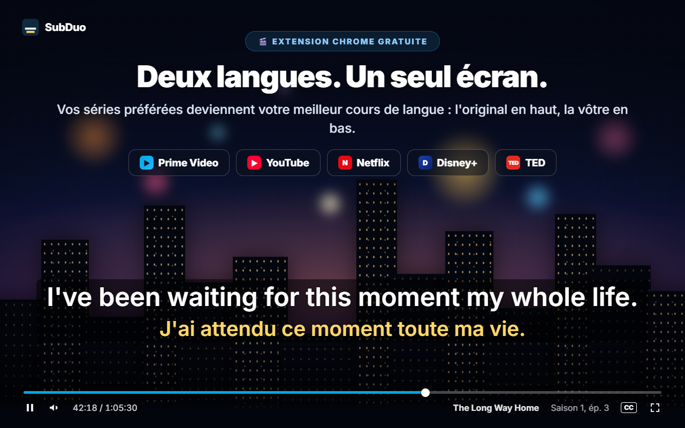
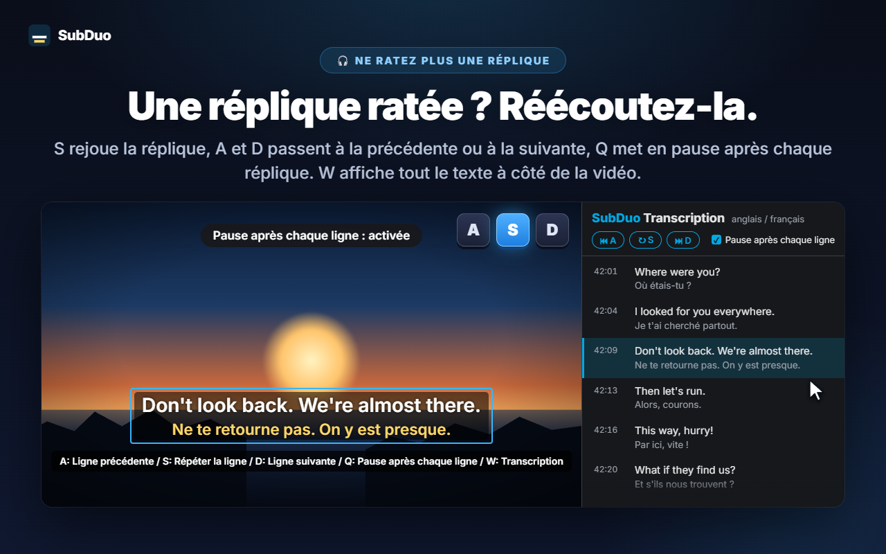
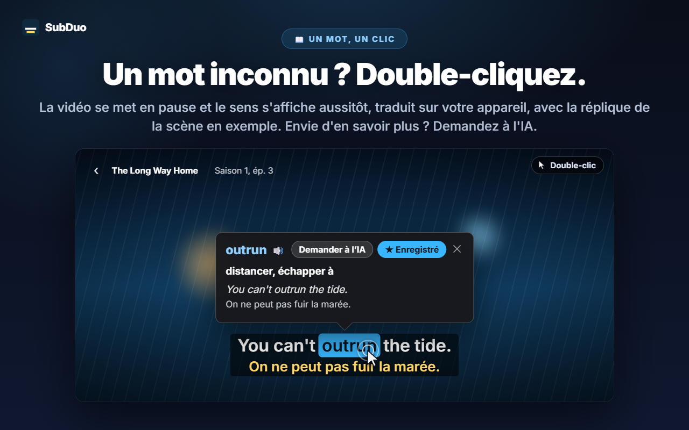
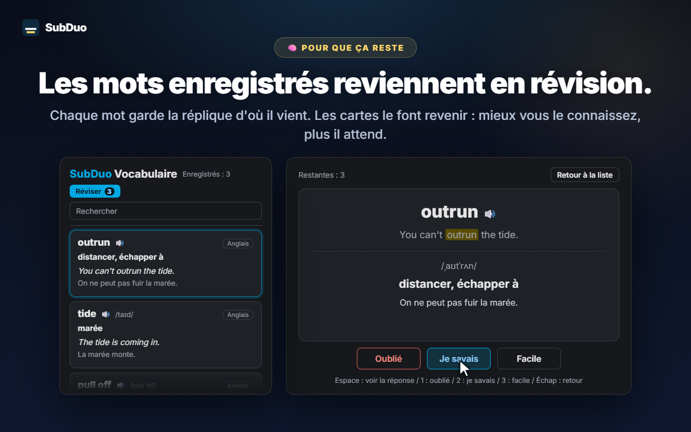

Deux langues de sous-titres au choix
Toutes les pistes fournies par le site sont détectées dès la lecture, y compris les sous-titres automatiques de YouTube. Choisissez-en une par ligne, ou masquez une ligne.
SubDuo affiche deux langues de sous-titres à la fois : l'original en haut, la vôtre en bas. Double-cliquez sur un mot pour voir son sens, réécoutez une réplique d'une seule touche et gardez ce que vous apprenez dans un vocabulaire intégré.
Utilise les sous-titres déjà fournis par chaque site · Sans compte · Les sous-titres restent dans votre navigateur
Les lecteurs de streaming n'affichent qu'une langue de sous-titres à la fois. SubDuo en ajoute une seconde — et les outils pour en tirer parti.
Écrans de l'extension, affichés dans votre langue.

Choisissez deux des pistes de sous-titres proposées par le titre : l'original en haut, votre langue en bas. Faites glisser les sous-titres où vous voulez, utilisez la molette sur une ligne pour changer sa taille et faites un clic droit pour régler couleurs, transparence ou flou.

Appuyez sur S pour répéter la réplique, sur A et D pour reculer ou avancer d'une réplique, et sur Q pour mettre en pause automatiquement après chaque ligne. W ouvre la transcription dans le panneau latéral de Chrome — les deux langues, ligne par ligne — et un clic sur une rangée vous y emmène.

La vidéo se met en pause et une fiche affiche aussitôt le sens, traduit sur votre appareil par le traducteur intégré de Chrome, avec la réplique de la scène en exemple. Alt+glisser sélectionne une expression. Touchez « Demander à l’IA » pour le sens en contexte, la prononciation et une phrase d'exemple.

Chaque mot enregistré garde la réplique d'où il vient. Recherchez et filtrez votre vocabulaire, écoutez la prononciation et révisez avec des cartes : mieux vous connaissez un mot, plus il attend avant de revenir.
Sans compte, sans écran de configuration. Installez-le et lancez la lecture.
Installez SubDuo depuis le Chrome Web Store, puis lancez une vidéo sur Prime Video, YouTube, Netflix, Disney+ ou TED.
Cliquez sur l'icône SubDuo et choisissez une langue de sous-titres pour la ligne du haut et une pour celle du bas. Seules les pistes proposées par le titre sont listées.
Double-cliquez sur les mots pour les consulter, appuyez sur A, S ou D pour réécouter une réplique et ouvrez votre vocabulaire depuis le popup.
Pensée pour celles et ceux qui apprennent en regardant — avec des sous-titres qui restent discrets jusqu'au moment où vous en avez besoin.
Toutes les pistes fournies par le site sont détectées dès la lecture, y compris les sous-titres automatiques de YouTube. Choisissez-en une par ligne, ou masquez une ligne.
Double-clic ou Alt+clic sur un mot, Alt+glisser sur une expression. La lecture se met en pause et la traduction, faite sur votre appareil, s'affiche sur la vidéo.
Le sens en contexte, la prononciation et une phrase d'exemple, dans votre langue d'affichage. Jusqu'à 20 explications par jour, gratuitement.
Enregistrez un mot d'un clic, recherchez, filtrez par langue et écoutez-le avec 🔊. Les cartes espacent les mots que vous connaissez déjà.
A pour la réplique précédente, S pour répéter, D pour la suivante. Q met en pause après chaque ligne. Floutez une ligne pour vous tester, puis survolez-la pour vérifier.
Toutes les répliques dans les deux langues, à côté de la vidéo. La ligne en cours est mise en évidence ; cliquez sur une rangée pour y aller. Ouvrez-la avec W.
Glissez pour déplacer, molette pour redimensionner une ligne, flèches pour ajuster, alignement à gauche, au centre ou à droite. Clic droit pour la couleur, la transparence et le flou de chaque ligne.
Grands sous-titres sur YouTube, discrets sur Netflix : les réglages sont enregistrés par site et synchronisés via votre Chrome.
Menus, traductions et explications de l'IA suivent la langue d'affichage que vous choisissez, qui peut différer de celle de Chrome.
SubDuo lit les fichiers de sous-titres que chaque site envoie déjà à votre navigateur et les affiche sur place. La seule chose qu'il transmet est une expression sur laquelle vous choisissez d'interroger l'IA, avec sa ligne de sous-titres.
Les sous-titres sont analysés et affichés dans votre navigateur. Vos réglages, votre vocabulaire et votre historique de visionnage ne sont pas envoyés au développeur. Les mots sont traduits sur votre appareil par le traducteur intégré de Chrome.
Lorsque vous touchez « Demander à l’IA », l'expression sélectionnée, sa ligne de sous-titres et l'autre ligne affichée, les codes de langue et un identifiant aléatoire de l'appareil (pour la limite quotidienne) sont envoyés au serveur SubDuo, qui demande l'explication à OpenAI. Votre adresse IP est traitée pour faire fonctionner le service.
Aucune inscription. L'extension ne contient ni publicité ni outil de statistiques.
« storage » pour les réglages et le vocabulaire, « scripting » pour reconnecter les onglets ouverts après une mise à jour, « sidePanel » pour la transcription, et l'accès aux cinq sites pris en charge uniquement.
S'installe en quelques secondes depuis le Chrome Web Store